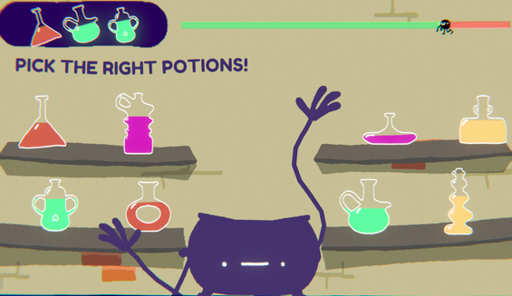
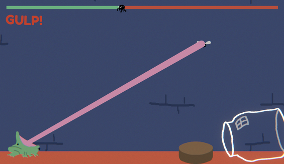
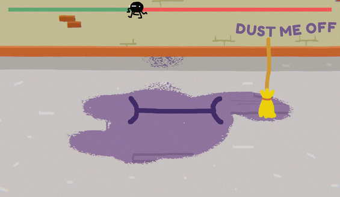

WitchSaver



ID
January 2017 Game Jam
Duration : 48h Tools : Unity
Roles
• Programming • Game Design
Team: Noé Laquèche || Dorian Beaugendre
Witchsaver is a playable screensaver inspired by the WarioWare genre for the 41st Ludum Dare. Once the screensaver is setup, the game will only launch when the screen goes to sleep. The player faces three different mini-games with increasing difficulty until they lose and are therefore kicked out of the game. Waiting is the only way to play again.

What I learned
This project was my very first introduction to shader in Unity (HLSL) by allowing the player to sweep the floor and see through a dust texture. Basic but instructive.